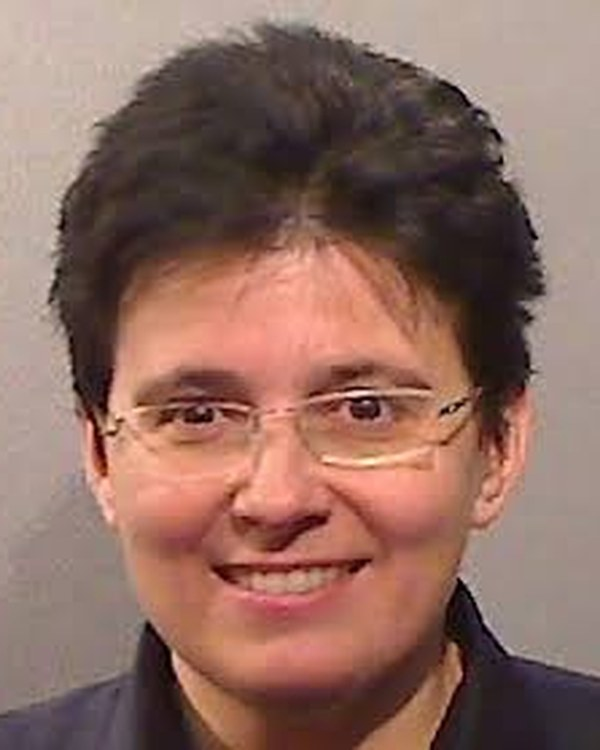
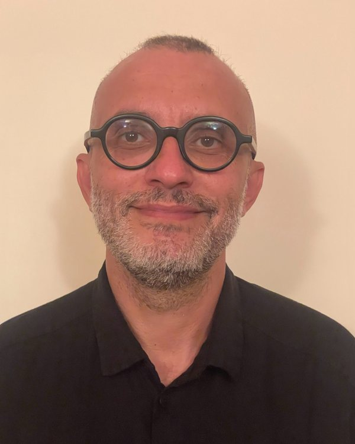
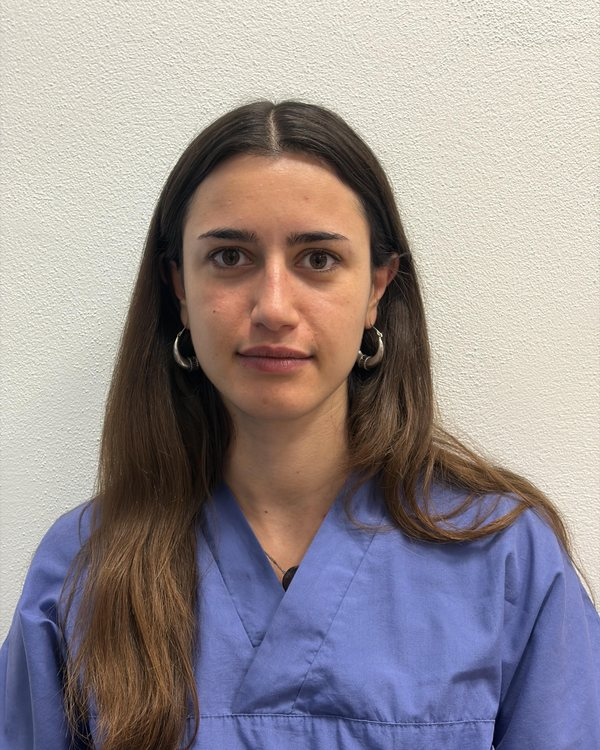
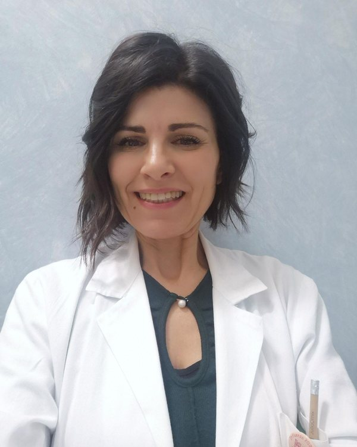
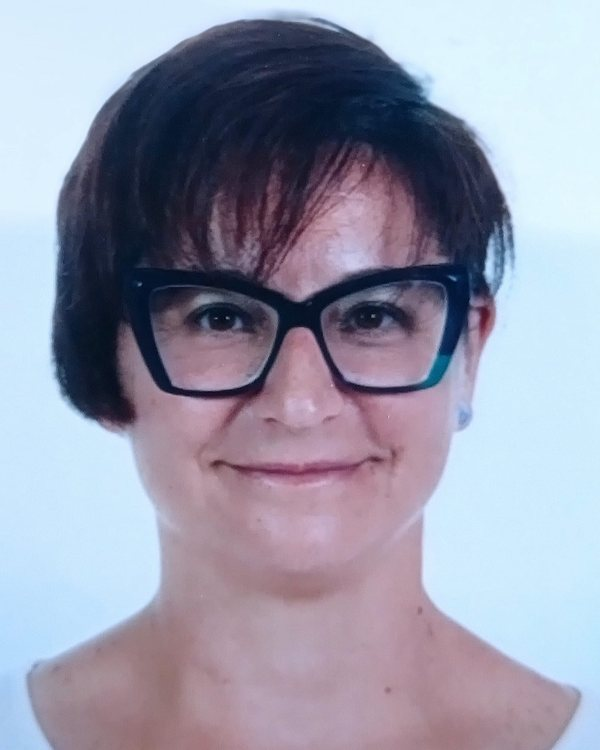
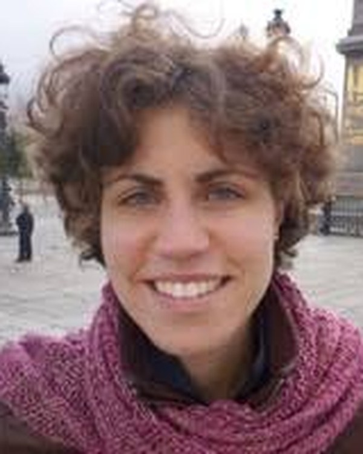
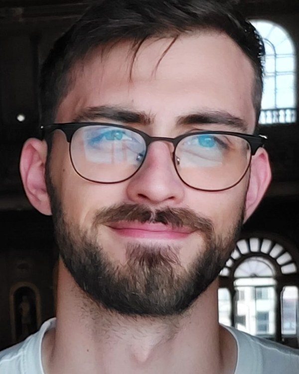
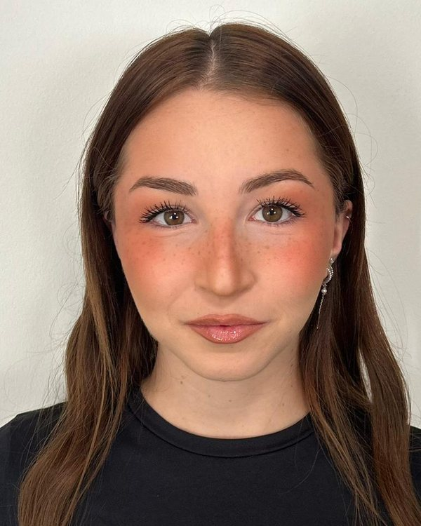
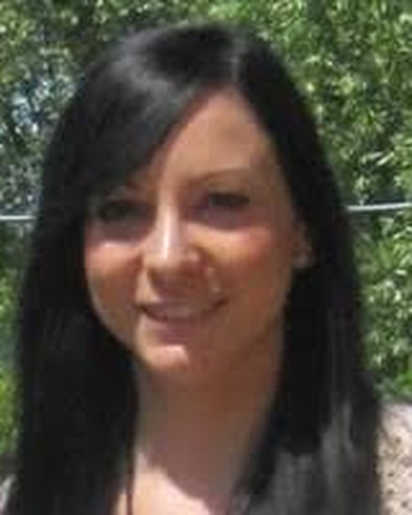

From motor neuron to muscle fibre.
We study the neuromuscular system as one working unit: the neuron, the junction, and the fibre it drives. Clinic, bench and data, in Padova.
One motor unit, many lines of research
Each line studies a different part of the same unit: the genes in the neuron's nucleus, the RNA in its cell body, the signal along its axon, the junction where it ends, and the muscle fibre it drives.
-
Nucleus
Genetics
Population datasets such as the UK Biobank show that repeat expansions and risk variants for neuromuscular disease are more common than diagnosed cases suggest. We estimate who carries them and what changes their effect.
High prevalence of SOD1 pathogenic variants in the UK BiobankAnn Neurol · 2026 -
Cell body
TDP-43 and RNA
When TDP-43 leaves the nucleus, cells include cryptic exons that switch off genes such as UNC13A and STMN2. With UCL Queen Square we map these events, test them as biomarkers and study splice-correcting therapies.
UNC13A splice correction rescues synaptic dysfunction induced by TDP-43 lossNature · 2026 -
Axon
ALS biomarkers
We combine neurophysiology, MRI and [18F]FDG-PET with fluid markers such as neurofilaments and chitinases to measure upper and lower motor neuron involvement and to predict how ALS will progress.
Metabolic and fluid biomarkers support microglia activation in amyotrophic lateral sclerosisAnn Clin Transl Neurol · 2026 -
Junction
Muscle and junction
Muscle is more than a passive victim of motor neuron loss. In patient biopsies and disease models we study regeneration, innervation and the neuromuscular junction, and develop ELISA assays for new biomarkers.
Protective role of angiogenin in muscle regeneration in ALSBrain Pathol · 2024 -
Fibre
SBMA
We follow people with Kennedy's disease over many years, measure the smallest changes in function that patients notice, and coordinate the clenbuterol trial in SBMA.
Longitudinal progression of 6-minute walk test-derived fatigability in SBMAMuscle Nerve · 2026
Clinicians and scientists, side by side
Neurologists, neurophysiologists, neuropsychologists, lab scientists, bioinformaticians and the trial team work on the same patients and the same questions.
Meet the team











Latest papers
News
Funded by
- AriSLAItalian research foundation for ALSarisla.it
- KDAKennedy's Disease Associationkennedysdisease.org
- AFM-TéléthonFrench Muscular Dystrophy Associationafm-telethon.fr
Member of ERN EURO-NMD, the European Reference Network for rare neuromuscular diseases.
Join the lab
We welcome students, residents and postdocs interested in neuromuscular disease, at the bench, in the clinic or with data. Tell us what you would like to work on.
Write to us